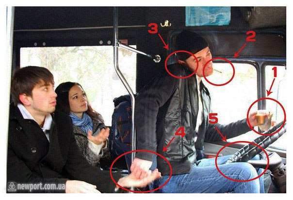
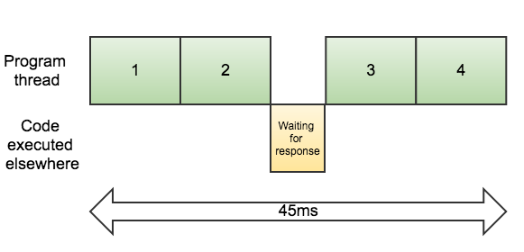

Promises and Asynchronous Programming in JS
Created for
Created by
Asynchrony in JavaScript
Asynchrony in JavaScript
What is multitasking?
{kind=link}

Multitasking in JS
- Multitasking (concurrency) is usually achieved by multi-threading or multiprocessing.
- A JavaScript program runs on a single thread!
- But the host environment (node.js/browsers/etc.) allows us to achieve a kind of multitasking programs using asynchronous code execution
- More on asynchronous JavaScript, event loop: Understanding Asynchronous JavaScript
Synchronous vs. Asynchronous Overview
{kind=link}

Synchronous vs. Asynchronous Demo
function syncDemo(){
console.time('syncDemo');
console.log(`1`);
console.log(`2`);
console.log(`3`);
console.timeEnd('syncDemo');
}
function asyncDemo(){
//setTimeout is executed asynchronous and is not blocking the rest of the code!
console.time('asyncDemo');
setTimeout(()=>{console.log(`1`)}, 1500)
setTimeout(()=>{console.log(`2`)}, 1000)
setTimeout(()=>{console.log(`3`)}, 500)
console.timeEnd('asyncDemo');
}
console.log(`~~~~~ Sync execution ~~~~~`);
syncDemo();
console.log(`\n~~~~~ Async execution ~~~~~`);
asyncDemo();
// output:
~~~~~ Sync execution ~~~~~
1
2
3
syncDemo: 0.317ms
~~~~~ Async execution ~~~~~
asyncDemo: 0.620ms
3
2
1
Promises
Promises
Overview
- A Promise is an object representing the eventual completion or failure of an asynchronous operation
- Essentially, a promise is a returned object to which you attach callbacks, instead of passing callbacks into a function.
The meaning
- NLP case: "If you keep your promise to clean the room, then we are going to eat icecream
let cleanRoom = new Promise(function(resolve, reject) {
setTimeout(function() {
resolve(`cleanRoom: resolved after 1s`);
}, 1000);
});
let eatIcecream = function(){
return new Promise(function (resolve, reject){
console.log(`Icecream time! `);
setTimeout( _=>{
resolve('eatIcecream: resolved after 2s')
},2000)
})
}
cleanRoom.then(eatIcecream)
Promise Constructor
let promise = new Promise(function(resolve, reject) {
// do something async...
if (/* everything turned out fine */) {
resolve("Promise fulfilled!");
}
else {
reject("Promise rejected");
}
}
- The Promise constructor takes one function (called executor), which is executed immediately by the Promise implementation, passing resolve and reject functions
- With Promise we can associate handlers with an asynchronous action's eventual success value or failure reason
- This lets asynchronous methods return values like synchronous methods: instead of immediately returning the final value, the asynchronous method returns a promise to supply the value at some point in the future.
example
// define the promise
let getDataPromise = new Promise(function(resolve, reject) {
setTimeout( ()=>{
resolve('Here are the data!')
}, 2000);
})
// usage
getDataPromise
.then( data=>console.log(data) )
Promise states
A Promise can be in one of these states:
- pending: initial state, neither fulfilled nor rejected.
- fulfilled: meaning that the operation completed successfully.
- rejected: meaning that the operation failed.
Promise usage - then() method
promise.then( (value)=>{// on fulfilled actions}, (err)=>{//on rejected actions} )
- The then() method takes up to two arguments: callback functions for the fulfilled and rejected states of the Promise.
- It returns a Promise (meaning you can chain then() methods )
Live demos and examples
Reference
Async
Async
Overview
- An asynchronous function is a function which operates asynchronously via the event loop, using an implicit Promise to return its result.
- The syntax and structure of a code using async functions is much more like using standard synchronous functions.
- The async function declaration defines an asynchronous function, which returns an AsyncFunction object.
- Reference: async_function @mdn
Example
const fs = require('fs');
// Reads text from the file asynchronously and returns a Promise.
function read(fileName) {
return new Promise((resolve, reject) => {
fs.readFile(fileName, "utf8", (err, data) => {
if (err) reject(err);
else resolve(data);
});
});
}
function doSomethingWithData(data){
console.log(data);
}
let fileName = 'sample_data/lorem.txt';
async function main(){
// we use read as if it were synchronous
const data = await read(fileName);
doSomethingWithData(data);
};
main();
These slides are based on
customised version of
framework